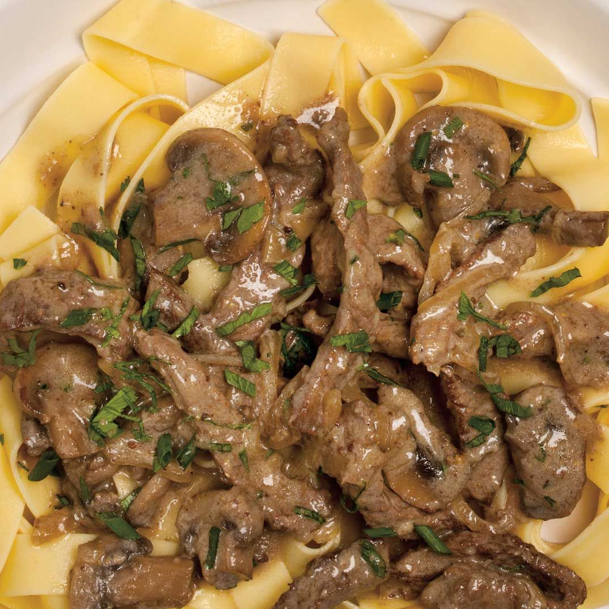

Beef Stroganoff

Description
A popular Russian food dish that is typically made from thinly sliced beef taken from a tender cut of meat,
which is quickly sautéed in butter with sliced mushrooms and onions. The sautéed mixture is then combined with
a sour cream sauce and is most often served over a rice pilaf or noodles.
Ingredients:
- 600 g / 1.2 lb scotch fillet steak / boneless rib eye
- 2 tbspp vegetable oil
- 1 large onion
- 300g / 10oz mushrooms
- 40g / 3 tbsp flour
- 2 cups / 500mL beef broth
- 1 tbsp Dijon mustard
- 150mL / ⅔ cup sour cream
- Salt and pepper
Steps:
- Use your fist (or rolling pin or mallet) to flatten the steaks to about 3/4cm
/ 1/3" thick. Slice into 5mm / 1/5" strips (cut long ones in half), discarding
excess fat.
- Sprinkle with a pinch of salt and pepper.
- Heat 1 tbsp oil in a large skillet over high heat. Scatter half the beef in the
skillet, QUICKLY spread it with tongs. Leave untouched for 30 seconds until
browned. Turn beef quickly (as best you can!). Leave untouched for 30
seconds to brown. Immediately remove onto a plate. Don't worry about pink
bits and that it will be raw inside.
- Add remaining 1 tbsp oil and repeat with remaining beef.
- Turn heat down to medium high. Add butter, melt. Then add onions, cook for 1
minute, then add mushrooms.
- Cook mushrooms until golden. Scrape bottom of fry pan to get all the golden
bits off (this is flavour!).
- Add flour, cook, stirring, for 1 minute.
- Add half the broth while stirring. Once incorporated, add remaining broth.
- Stir, then add sour cream and mustard. Stir until incorporated (don't worry if it
looks split, sour cream will "melt" as it heats).
- Bring to simmer ,then reduce heat to medium low. Once it thickens to the
consistency of pouring cream (3 - 5 minutes), adjust salt and pepper to taste.
- Add beef back in (including plate juices). Simmer for 1 minute, then remove
from stove immediately. (Note 4)
- Serve over pasta or egg noodles, sprinkled with chives if desired.